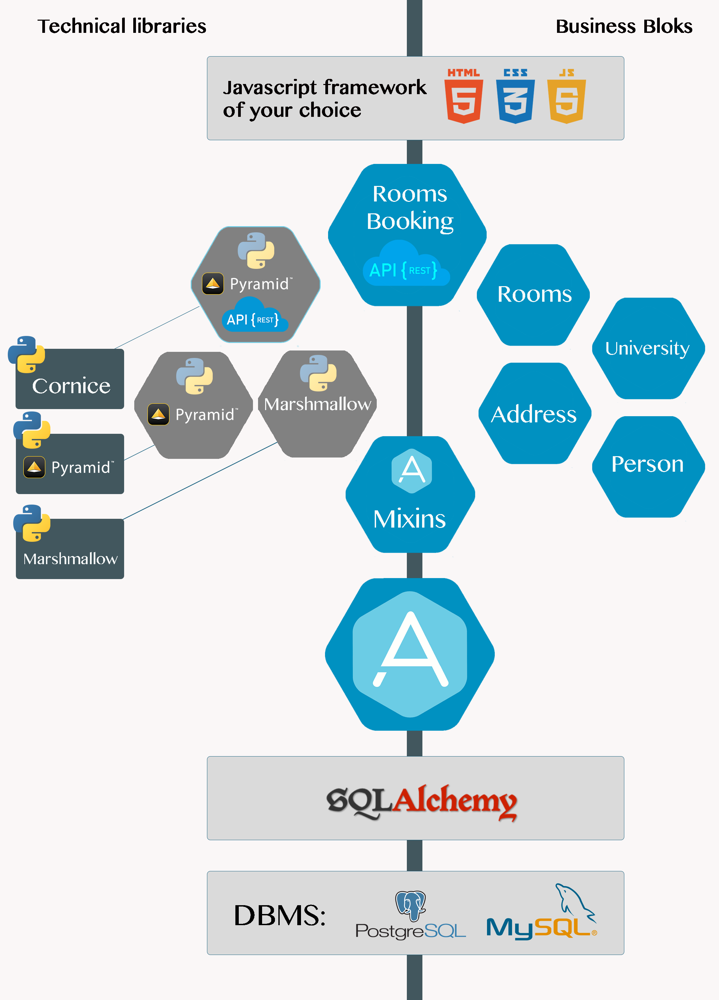

IV Expose model as Rest API
Note: You can clone
IV-servicebranch from [AnyBlok/anyblok-book-examples][gh_abe] repo to get ready to start with this chapter.

make run-dev
curl http://0.0.0.0:8080/api/v1/rooms?filter[address.city][ilike]=paris&order_by[desc]=capacity